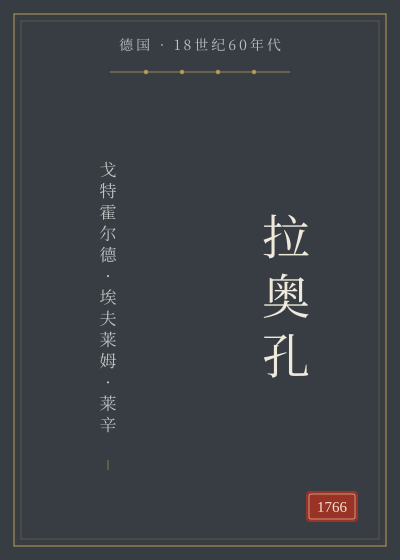
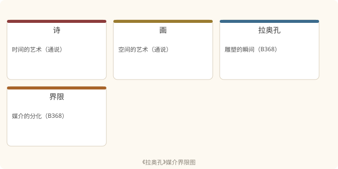

拉奥孔
一、基本信息
| 作者 | 戈特霍尔德·埃夫莱姆·莱辛 |
|---|---|
| 成书/出版 | 1766年（Britannica B368：Laokoon (1766)——'Lessing attempted to fundamentally define the separate functions of painting and of poetry'） Gotthold Ephraim Lessing — Encyclopaedia Britannica（百科全书） |
| 国别/地区 | 德国 |
| 时代 | 近代 · 18世纪60年代 |
| 体裁 | 美学论著 |
| 语言 | 德语 |

《拉奥孔》媒介界限图（主题·结构图）
二、创作背景
Britannica（B368）：'fundamentally define the separate functions of painting and of poetry'（界定绘画与诗歌各自的功能）。
Britannica（B368）：莱辛——德国批评传统的奠基（Hamburgische Dramaturgie 交叉）。
题材（通说待核）：以'拉奥孔'群雕与维吉尔史诗的对比——'动作'vs'物体'的媒介论。
三、内容脉络
（通说待核）雕塑的'最富孕育性瞬间'（通说待核——莱辛概念）。
（通说待核）温克尔曼'高贵的单纯'之辨。
四、主要人物表
| 人物 | 身份 | 说明 |
|---|---|---|
| （论著无人物） | —— | 美学论著 |
五、主题与艺术特点
- 诗与画的媒介界限（B368）。
- 时间艺术与空间艺术（通说待核）。
- 新古典主义的批评（通说待核）。
六、影响与评论
- Britannica：'define the separate functions of painting and of poetry'（B368）。
Gotthold Ephraim Lessing — Encyclopaedia Britannica（百科全书） - Britannica：影响狂飙突进的批评传统（B368 交叉——dramaturgie）。
Gotthold Ephraim Lessing — Encyclopaedia Britannica（百科全书）
七、阅读建议
难点
- 美学概念的德语术语。
- 古典雕刻的图像学。
- 《拉奥孔》中译本（人民文学/商务等——通说待核）。
- 德文原版（公有领域）。
莱辛批评首选；与《汉堡剧评》对读。
八、待核实
- '最富孕育性的瞬间'说法核对（通说——莱辛原话）。
- 1766年出版细节待核。
- 温克尔曼论战细节待核。